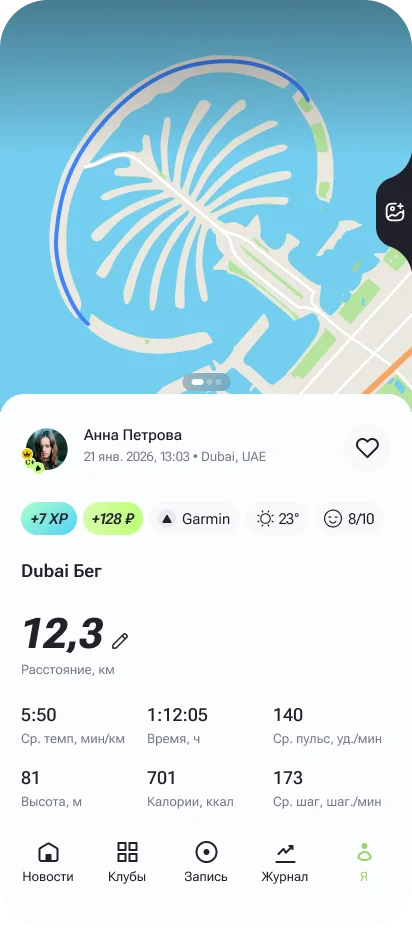
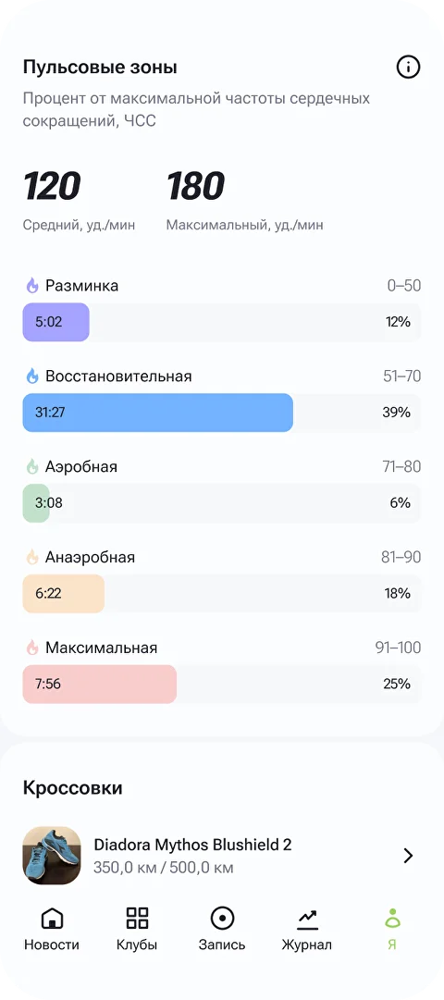

Высота блока определяется текстовой колонкой. Скрины используют height:100% и не выходят за пределы блока — ширина считается автоматически по соотношению сторон.
Оба телефона стоят ровно (без rotate), занимают по 96% высоты блока. Левый чуть выезжает вправо, правый — влево, мягко накладываются друг на друга. Минималистично, продуктово, без декоративной «динамики».
Привязываешь свой трекер за 30 секунд. Тренировки попадают в Moneyrun автоматически — никаких ручных вводов и скриншотов.


Главный — Dubai Бег (100% высоты блока, +3°). Маленький — Пульсовые зоны (70% высоты, −7°), сидит слева на уровне середины. Сильная иерархия, фокус на одном экране.
Привязываешь свой трекер за 30 секунд. Тренировки попадают в Moneyrun автоматически — никаких ручных вводов и скриншотов.